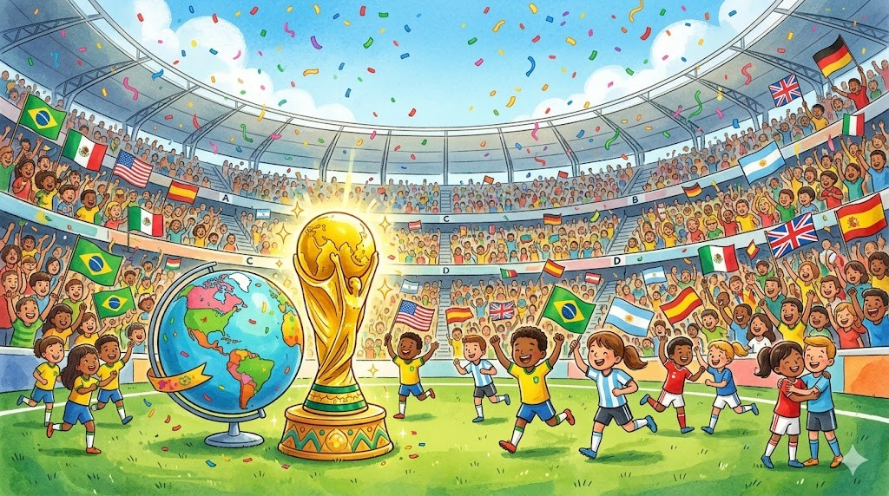
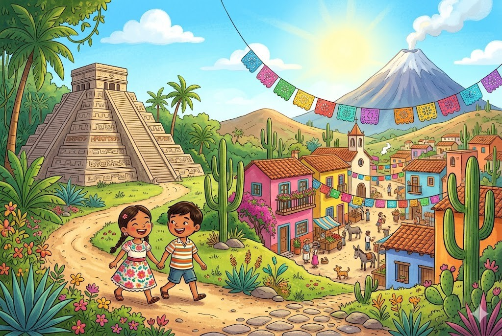
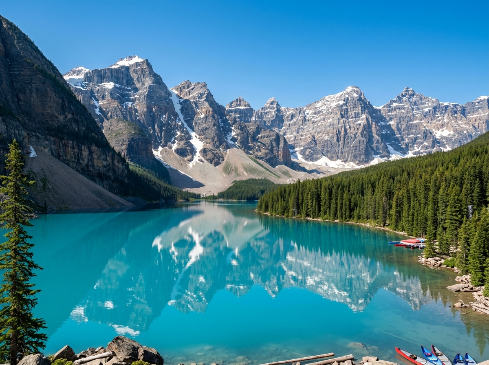
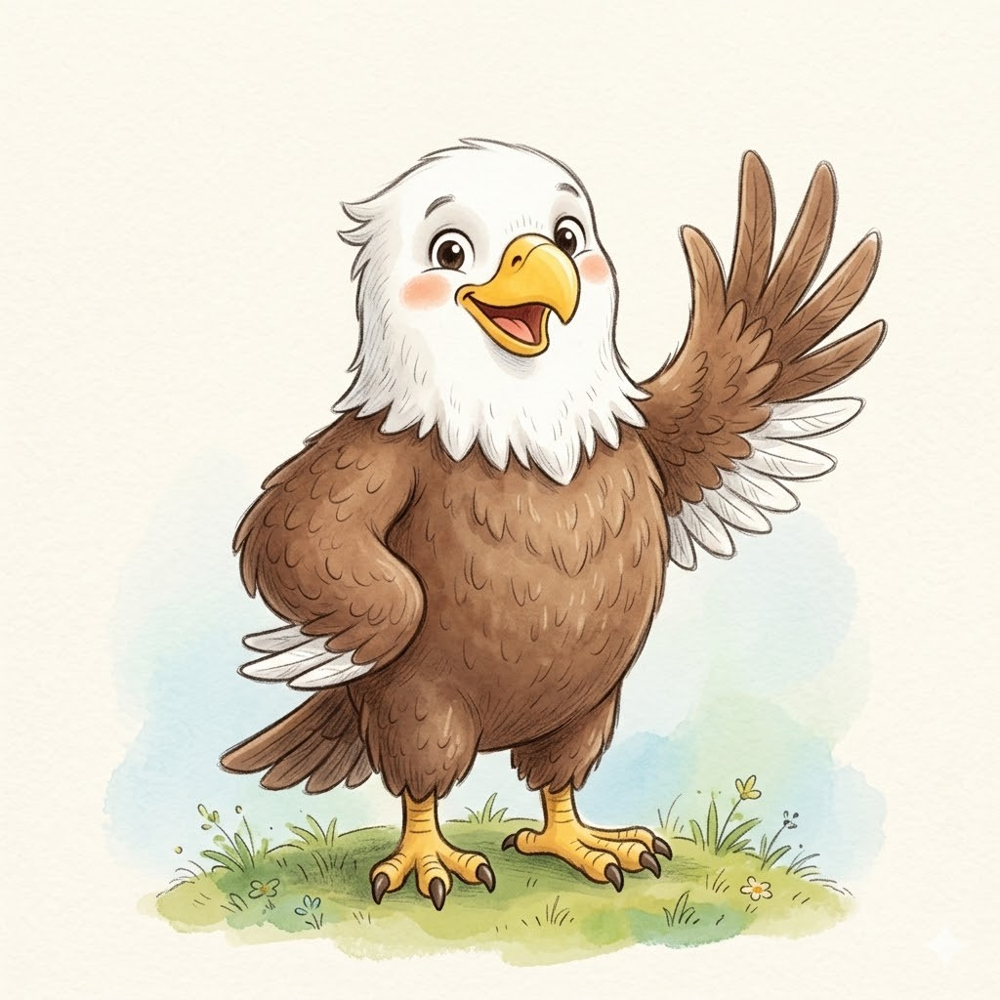
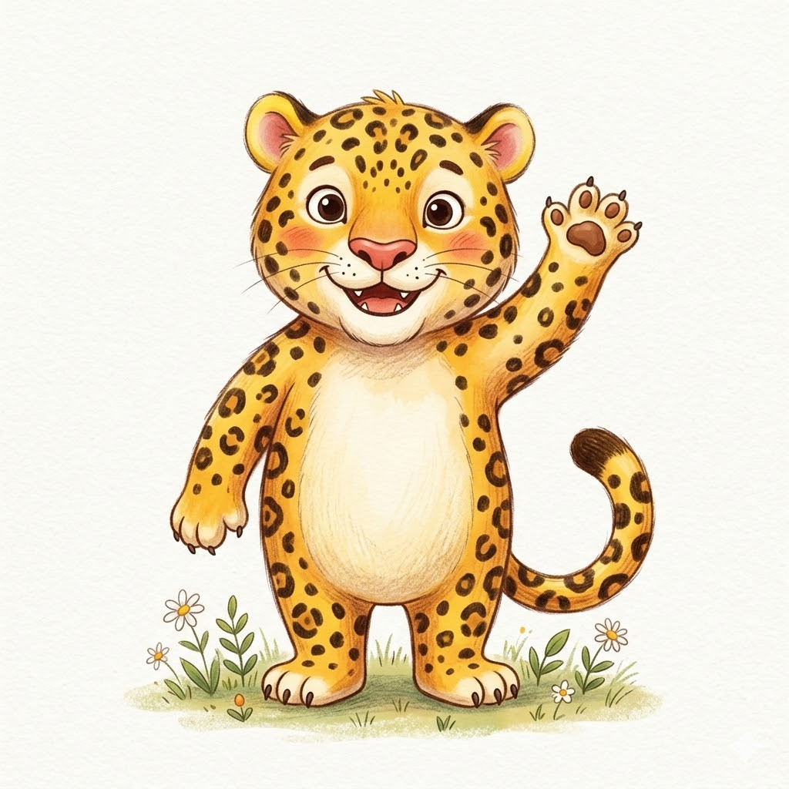
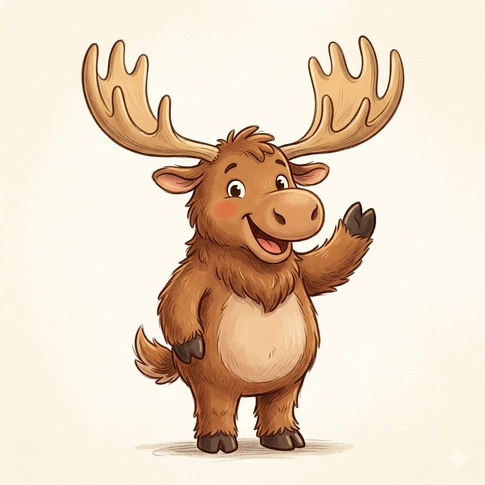
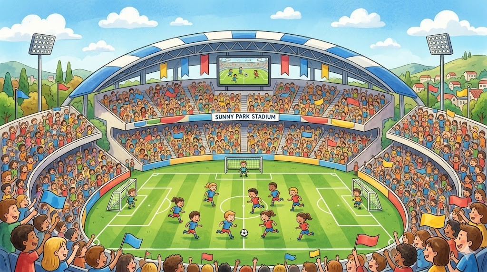
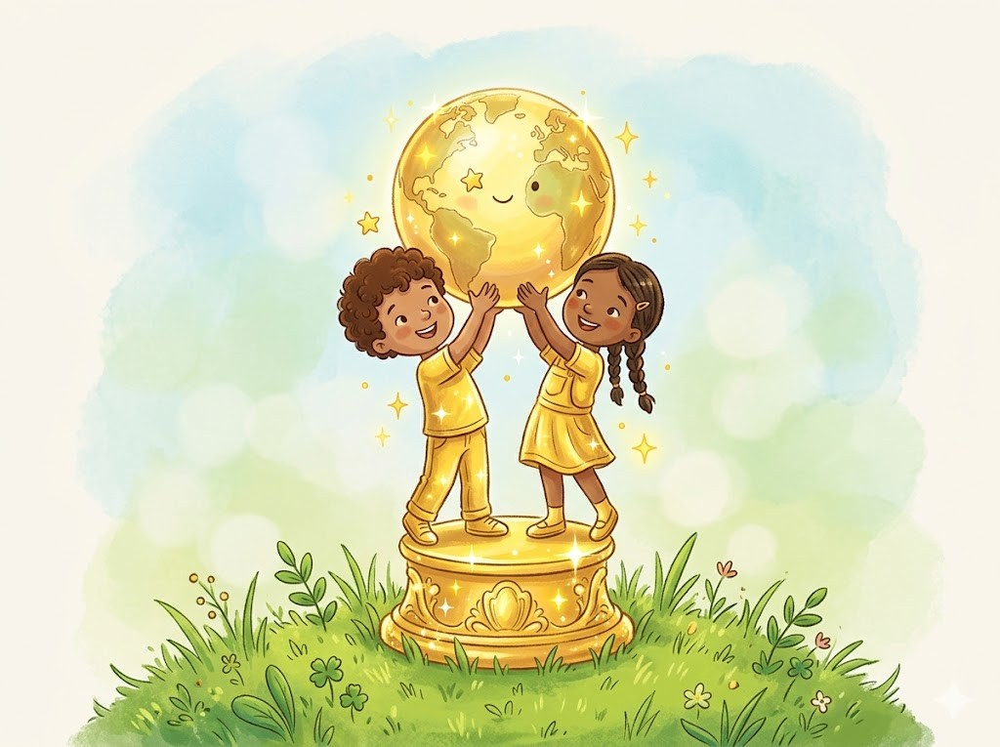

Die Fußball-WM 2026
⚽
Das größte Fußballfest der Welt

Bevor es mit deinem Land losgeht: Hier erfährst du, was die Fußball-Weltmeisterschaft überhaupt ist und was 2026 ganz besonders an ihr ist. Lies in Ruhe und achte auf die grün umrandeten Spannenden Fakten, mit denen du angeben kannst.
🌍 Was ist die Fußball-WM?
Alle vier Jahre treffen sich die besten Fußball-Nationalmannschaften der Welt zur Weltmeisterschaft, kurz WM. Vorher müssen sich die Mannschaften in vielen Spielen dafür qualifizieren. Wer es schafft, darf bei der Endrunde mitspielen. Am Ende gewinnt nur eine Mannschaft den begehrten WM-Pokal und ist für vier Jahre Weltmeister.
Die allererste Fußball-WM gab es im Jahr 1930 im Land Uruguay. Seitdem wird sie immer wieder in einem anderen Teil der Welt ausgetragen.
| Wann? | 11. Juni bis 19. Juli 2026 |
| Wo? | in den USA, in Kanada und in Mexiko |
| Mannschaften | 48 Mannschaften, so viele wie noch nie |
| Eröffnungsspiel | im Aztekenstadion in Mexiko-Stadt |
| Endspiel | im großen Stadion bei New York (USA) |
| Titelverteidiger | Argentinien (Sieger von 2022) |
| Erste WM überhaupt | 1930 in Uruguay |
Info-Heft Fußball-WM 2026 · HSU · Seite 1
🗺️ Drei Länder, ein Turnier
Die WM 2026 ist etwas Besonderes, denn sie findet zum ersten Mal in drei Ländern gleichzeitig statt. Gespielt wird in 16 Stadien: elf in den USA, drei in Mexiko und zwei in Kanada. Die Mannschaften reisen also viel umher.

USA 🇺🇸
Die meisten Spiele finden hier statt. Auch das Endspiel wird in den USA gespielt.

Mexiko 🇲🇽
Hier wird die WM eröffnet, im riesigen Aztekenstadion in Mexiko-Stadt.

Kanada 🇨🇦
Auch im hohen Norden in Kanada rollt bei zwei Spielorten der Ball.
Jede WM hat ein lustiges Maskottchen, das für gute Stimmung sorgt. Weil es 2026 drei Gastgeberländer gibt, gibt es auch drei Maskottchen, für jedes Land ein Tier.

Clutch, der Adler
Der Weißkopfseeadler steht für die USA.

Zayu, der Jaguar
Der Jaguar gehört zu Mexiko.

Maple, der Elch
Der Elch ist das Maskottchen von Kanada.
Info-Heft Fußball-WM 2026 · HSU · Seite 2
⚽ So läuft ein Fußballspiel
⏱️Ein Spiel dauert 90 Minuten, in zwei Halbzeiten von je 45 Minuten mit Pause.
👥Jede Mannschaft hat 11 Spieler, zehn Feldspieler und einen Torwart.
🧤Nur der Torwart darf den Ball mit den Händen fangen.
🟨Der Schiedsrichter leitet das Spiel und zeigt bei Fouls die gelbe oder rote Karte.

🏆 Der Pokal
Die Siegermannschaft bekommt den goldenen FIFA-WM-Pokal. Er ist eine der bekanntesten Trophäen der Welt.
⚽ Der Ball heißt Trionda
Der offizielle Spielball trägt die Farben der drei Gastgeber: rot für Kanada, blau für die USA und grün für Mexiko.

🎵 Ein eigenes WM-Lied
Zu jeder WM gibt es ein offizielles Lied. So wird das große Fußballfest auf der ganzen Welt gefeiert.
🤓 Angeberwissen
Bei der WM 2026 spielen zum ersten Mal 48 Mannschaften mit. Bei den Turnieren davor waren es immer nur 32.
Jetzt bist du dran: Such dir dein WM-Land aus und werde zum Experten. Mit dem Sachtext-Heft und der Designer-App baust du dein eigenes Länder-Referat.
🎮
Teste dich im Quiz
Quiz, Wahr oder Falsch und Buchstabensalat rund um die WM.
los geht's →
Info-Heft Fußball-WM 2026 · HSU · Seite 3